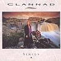

Celtic Lyrics Corner > Artists & Groups > Clannad > Sirius > Second Nature
|  | Second Nature |
| Credits : | Ciarán Brennan |
| Appears On : | Sirius ; Pastpresent |
| Language : | English |
Lyrics :
To a son it is given
Some dusty strings from the wall
Fingers touch and he plays a tune
It's a mighty air, you know the heart is there
It hides from the outside
And it shines from within
A ready pan for a picture
Fine scribes lead the way
Focus lens, direct eyes that see
The gifted hands through timeless sands
It hides from the outside
And it shines from within
Second nature...
When nature takes you for a stroll
Down an avenue with so much soul
Pleasure, gifts, and the ornaments
Creation found in the moving cloud
It hides from the outside
And it shines from within
The kind that keep holding on
And it shines within
Second nature...